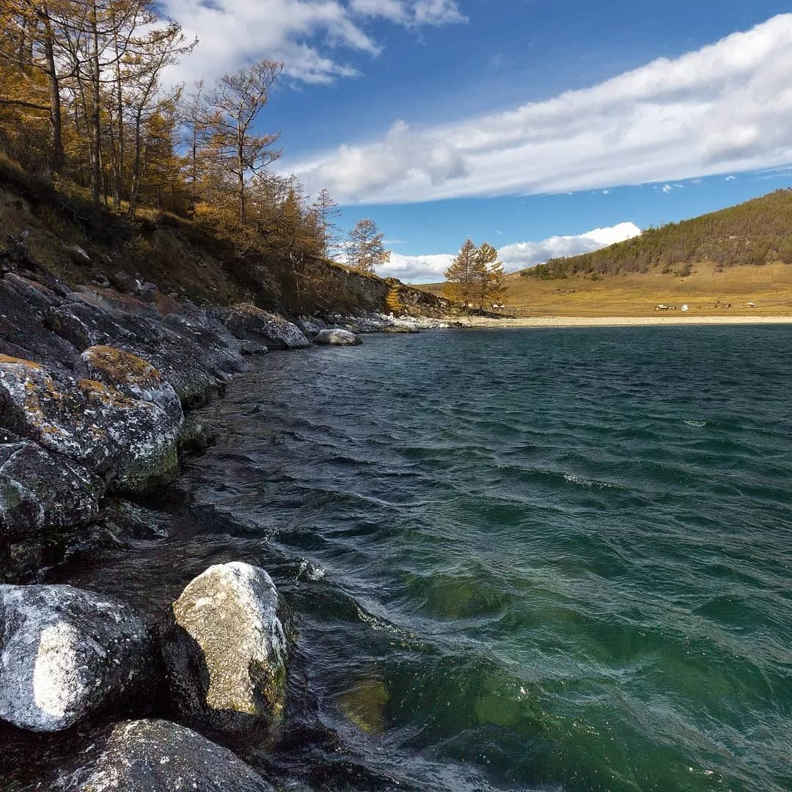

Байкальский отдых с нами – это легко!

На сайте туристического агентства «Байкальский отдых» вы найдете всю необходимую информацию
о туристических базах отдыха на озере Байкал. Любите ли вы отличный сервис и европейский
комфорт или предпочитаете прочувствовать все трудности дикого туризма и окунуться в атмосферу
байкальской природы, здесь вы сможете найти турбазу по своему вкусу. Туристические базы отдыха на
Байкале предоставляют разнообразные условия размещения, они отличаются по перечню предлагаемых услуг
и уровню комфорта. Есть большие турбазы с полностью организованным питанием и вечерними дискотеками,
есть также небольшие малолюдные базы всего с несколькими коттеджами. Можно арендовать отдельный гостевой
домик с кухней и готовить пищу самостоятельно. Среди этого многообразия обязательно найдется подходящая,
именно вам, база отдыха. Тем не менее, Байкал, до сих пор, обладает всеми оттенками дикого экотуризма, чем и
привлекает, уставших от городской суеты, туристов. Если вы предпочитаете зимний байкальский отдых, к Вашим
услугам круглогодичные отапливаемые турбазы и различные зимние развлечения. Байкал зимой поражает кристальной
чистотой и прозрачностью льда. Туристы очень любят отмечать Новогодние праздники и Рождество на турбазах Байкала, так как
новый год на Байкале отличается особым волшебством. Развлекательную новогоднюю программу готовит почти каждая турбаза.